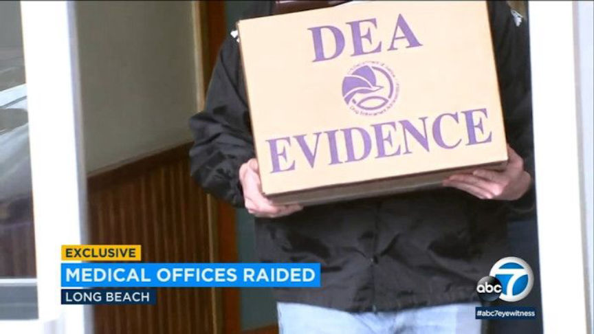
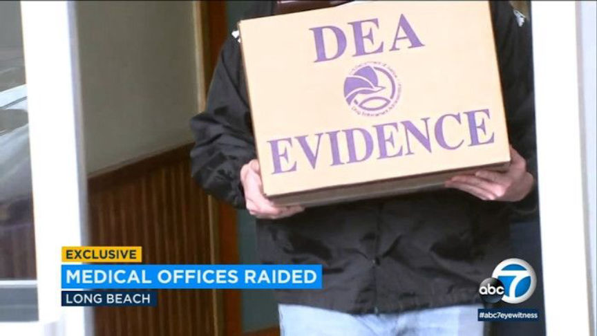

Riverside Man Admits Darkweb Drug Trafficking
~3 min read | Published on 2019-09-25, tagged Darkweb-Vendor, Drugs, Pleaded-Guilty using 501 words.
A Riverside County man on September 23, 2019, pleaded guilty to drug trafficking charges that originated from the theft of physicians’ Drug Enforcement Administration (DEA) numbers and dates of birth. The defendant used the stolen information to obtain prescription medications that he then sold on the dark web.
Christopher James Lazenby, 29, appeared before U.S. District Judge Stephen V. Wilson in the Los Angeles Federal Court for his plea hearing. The U.S. Attorney’s Office Central District of California told the court that Lazenby stole the identities of at least nine doctors, which he used to access the Drug Enforcement Administration’s online registration system. He then changed the addresses of eight of the doctors to mailboxes he had rented in South Los Angeles and Carson using false identities. For the ninth doctor, Lazenby altered the address to show that the doctor’s office was at Motel 6 in Inglewood.
After changing the doctor’s official addresses, Lazenby forged their signatures on counterfeit prescriptions and ordered oxycodone, hydrocodone, and Adderall. The drugs were then delivered to the addresses that he controlled. After receiving the drugs, Lazenby sold them on undisclosed dark web marketplaces and craigslist.
According to the criminal complaint DEA investigators got on Lazenby’s trail after they spoke to a UPS store owner who had been refusing packages to a mailbox rented under the initials J.N. The owner told the investigators that he declined the packages because they were marked in care of other individuals. Further investigations revealed that the photographs on the documents used to apply for the rental mailbox and those on Lazenby’s IDs in California’s Department of Motor Vehicle (DMV) were of the same person.
The investigators also reviewed A$AT records and found out that the phone number in the form used in renting the mailbox belonged to Lazenby. Similar inquiries were carried out on other mailboxes used by Lazenby. The evidence enabled the cops to acquire a search warrant against Lazenby’s hotel room.
On October 3, 2018, Lazenby’s drug trafficking operation was brought to an end by his arrest in a long-term hotel room in Torrance he had rented under a false identity. The law enforcement officers searched the hotel room and Lazenby’s car where they found and seized 196 grams of methamphetamine, oxycodone pills, a personal computer, and other electronic devices. They also found and seized prescription pads and rubber stamps in the names of the doctor’s whose identities he had stolen.
Lazenby’s arrest was part of Operation “Hypocritical Oath” that targeted medical practitioners and drug traffickers suspected of diverting highly addictive drugs to black markets. The operation resulted in the arrest of six doctors, drug traffickers and physician assistants over one week in February 2019. The operation also led to four medical practitioners losing their licenses. Lazenby and two doctors were arrested in the earlier stages of the operation.
Lazenby pleaded guilty to two counts of possession of oxycodone and methamphetamine with the intent to distribute. Judge Wilson scheduled Lazenby’s sentencing hearing on February 10, 2020.
Christopher James Lazenby, 29, appeared before U.S. District Judge Stephen V. Wilson in the Los Angeles Federal Court for his plea hearing. The U.S. Attorney’s Office Central District of California told the court that Lazenby stole the identities of at least nine doctors, which he used to access the Drug Enforcement Administration’s online registration system. He then changed the addresses of eight of the doctors to mailboxes he had rented in South Los Angeles and Carson using false identities. For the ninth doctor, Lazenby altered the address to show that the doctor’s office was at Motel 6 in Inglewood.
Evidence Seized by the Drug Enforcement Administration | Credit: ABC7
After changing the doctor’s official addresses, Lazenby forged their signatures on counterfeit prescriptions and ordered oxycodone, hydrocodone, and Adderall. The drugs were then delivered to the addresses that he controlled. After receiving the drugs, Lazenby sold them on undisclosed dark web marketplaces and craigslist.
According to the criminal complaint DEA investigators got on Lazenby’s trail after they spoke to a UPS store owner who had been refusing packages to a mailbox rented under the initials J.N. The owner told the investigators that he declined the packages because they were marked in care of other individuals. Further investigations revealed that the photographs on the documents used to apply for the rental mailbox and those on Lazenby’s IDs in California’s Department of Motor Vehicle (DMV) were of the same person.
The investigators also reviewed A$AT records and found out that the phone number in the form used in renting the mailbox belonged to Lazenby. Similar inquiries were carried out on other mailboxes used by Lazenby. The evidence enabled the cops to acquire a search warrant against Lazenby’s hotel room.
On October 3, 2018, Lazenby’s drug trafficking operation was brought to an end by his arrest in a long-term hotel room in Torrance he had rented under a false identity. The law enforcement officers searched the hotel room and Lazenby’s car where they found and seized 196 grams of methamphetamine, oxycodone pills, a personal computer, and other electronic devices. They also found and seized prescription pads and rubber stamps in the names of the doctor’s whose identities he had stolen.
Lazenby’s arrest was part of Operation “Hypocritical Oath” that targeted medical practitioners and drug traffickers suspected of diverting highly addictive drugs to black markets. The operation resulted in the arrest of six doctors, drug traffickers and physician assistants over one week in February 2019. The operation also led to four medical practitioners losing their licenses. Lazenby and two doctors were arrested in the earlier stages of the operation.
Lazenby pleaded guilty to two counts of possession of oxycodone and methamphetamine with the intent to distribute. Judge Wilson scheduled Lazenby’s sentencing hearing on February 10, 2020.